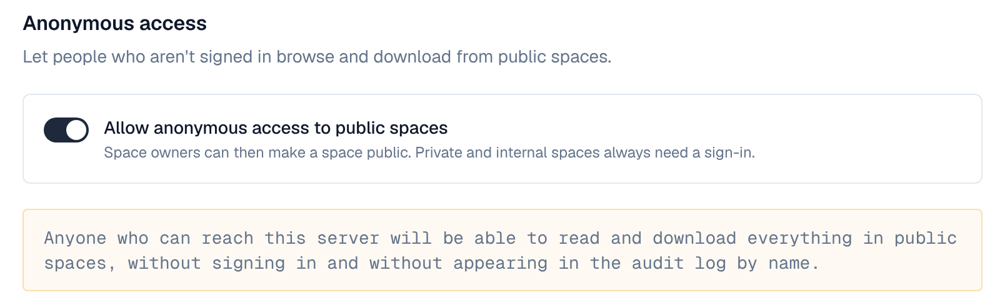
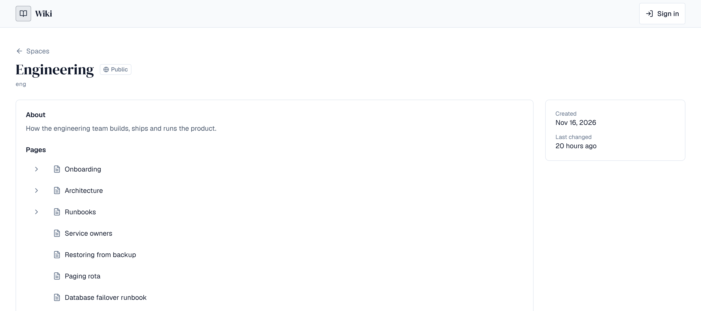

By default everyone signs in. With anonymous access on, a space can be made public, and anyone who reaches the Wiki can read it without signing in. It is one switch for the whole installation.
1. Turn it on

- Open the setting — Settings → Security → Anonymous access (settings:write).
- Allow anonymous access to public spaces — Turn it on and save. The page warns that anyone who can reach the server will be able to read everything in public spaces.
- Make spaces public — A space's admins set Visibility → Public in the space's Settings. Private and internal spaces always need a sign-in.
Turning it off again makes every public space readable only by signed-in people; the spaces keep their visibility for when it is turned back on.
2. What signed-out visitors see

- The list of public spaces, a public space's overview, its published pages and their history.
- Public questions in Q&A, with their answers and comments, when Q&A moderators allow them (see Q&A moderation).
- People's names as the authors typed them in mentions, but not who created or changed pages.
- Not drafts, members or settings. The pages for labels and search aren't shown to them, but public content can be searched and listed by label through the API (/api/search), so treat everything in a public space as findable.
3. Things to know
- Anonymous visitors share the anonymous rate limit per address (RATE_LIMIT_ANON, 60 a minute by default; see Rate limits). Behind a proxy, set FRONTEND_BEHIND_PROXY=true on the web app and TRUSTED_PROXIES on the server so each visitor has their own address (see Install the Wiki).
- Their page views are counted in analytics without any identity.
- Whether search engines index public spaces is a separate setting: Search engines.
- A public page's history shows text since removed: check a page's history before making its space public.
Anything in a public space can be read and copied by anyone who reaches the server. Keep anonymous access off unless the Wiki is meant to publish to people without accounts.